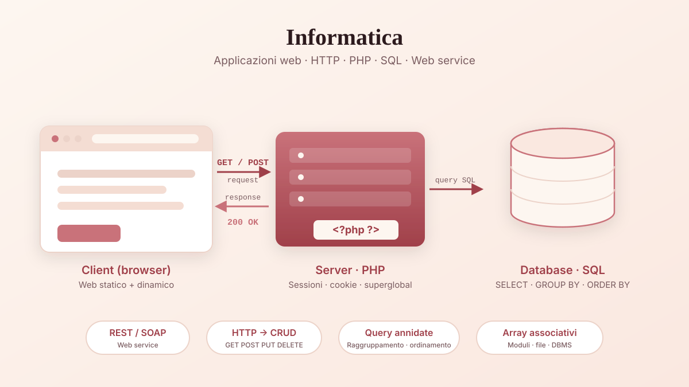

Area scientifico-tecnica
Informatica
L’Informatica è stata la materia che più ha rappresentato il percorso che ho scelto alle superiori. Durante il quinto anno abbiamo approfondito lo sviluppo di applicazioni web, lavorando sia sulla parte frontend sia sulla comunicazione con database e servizi backend. Quando ho scelto questo indirizzo ero convinta che la programmazione sarebbe stata l'aspetto che mi avrebbe appassionata di più. Con il tempo, però, ho scoperto di essere particolarmente interessata alla parte teorica, perché permette di comprendere ciò che avviene dietro le tecnologie che utilizziamo ogni giorno. Un esempio è lo studio dei protocolli HTTP e HTTPS: capire come avviene la comunicazione tra client e server e come vengono protetti i dati durante la navigazione mi ha fatto apprezzare ancora di più il funzionamento del web. Oltre agli aspetti tecnici, questa materia mi ha insegnato anche a lavorare in gruppo, confrontarmi con gli altri e organizzare un progetto in modo concreto, proprio come avviene in un vero team di sviluppo.

HTTP (HyperText Transfer Protocol)
HTTP è il protocollo di comunicazione utilizzato per trasferire pagine web e dati tra un client (ad esempio un browser) e un server web.
Quando scrivi un indirizzo web nel browser:
- Il browser invia una richiesta HTTP al server.
- Il server elabora la richiesta.
- Il server invia una risposta HTTP al browser.
- Il browser visualizza il contenuto ricevuto.
Caratteristiche principali
- È un protocollo del livello applicazione.
- Utilizza normalmente il protocollo TCP per la trasmissione dei dati.
- È stateless (senza stato): ogni richiesta è indipendente dalle precedenti.
- Per mantenere informazioni tra una richiesta e l'altra si usano cookie, sessioni o token.
Struttura di una richiesta HTTP
Una richiesta contiene:
- Metodo: indica l'operazione da eseguire.
I più importanti sono:
- GET → richiede dati al server.
- POST → invia dati al server.
- PUT → modifica o sostituisce una risorsa.
- DELETE → elimina una risorsa.
HTTPS (HyperText Transfer Protocol Secure)
HTTPS è la versione sicura di HTTP. Permette la comunicazione tra client (browser) e server web proteggendo i dati scambiati tramite crittografia.
Quando un utente visita un sito HTTPS:
- Il browser si collega al server.
- Viene stabilita una connessione sicura tramite TLS/SSL.
- I dati vengono cifrati.
- Client e server comunicano in modo protetto.
HTTPS garantisce:
- Riservatezza (Confidentiality): i dati vengono crittografati e non possono essere letti da terzi.
- Integrità (Integrity): i dati non possono essere modificati durante la trasmissione senza che ciò venga rilevato.
- Autenticazione (Authentication): permette di verificare che il sito visitato sia realmente quello desiderato.
HTTPS utilizza:
- HTTP per lo scambio delle informazioni.
- TLS (Transport Layer Security) per la sicurezza.
Prima dello scambio dei dati avviene il TLS Handshake:
- Il client contatta il server.
- Il browser verifica il certificato.
- Client e server concordano una chiave di cifratura.
- Inizia la comunicazione protetta.
Vantaggi di HTTPS
- Protezione delle password.
- Protezione dei dati personali.
- Maggiore fiducia degli utenti.
- Migliore sicurezza per acquisti online e servizi bancari.
- Migliore indicizzazione nei motori di ricerca.
| HTTP | HTTPS |
|---|---|
| Dati in chiaro | Dati crittografati |
| Meno sicuro | Più sicuro |
| Porta 80 | Porta 443 |
| Nessun certificato | Certificato digitale |
| Vulnerabile ad intercettazioni | Protegge da intercettazioni |